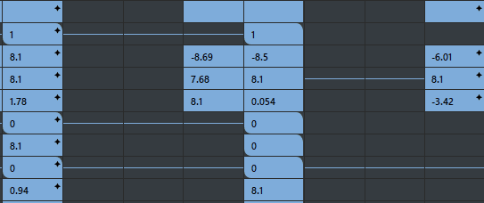

“摄影表编辑器”(Dope Sheet Editor)提供了一种简单的密集关键帧处理方法，使您可以进行大规模计时编辑。
“摄影表编辑器”(Dope Sheet Editor)（或“摄影表”(Dope Sheet)）为曲线图编辑器(Graph Editor)做了补充，使您可以对场景进行大规模计时调整。在“曲线图编辑器”(Graph Editor)中，您可以调整曲线上的各个关键帧；与此不同的是，“摄影表编辑器”(Dope Sheet Editor)使您可以轻松编辑动画的较大部分。例如，推动动画使其晚些开始，或减慢旋转通道的速度
使用“摄影表”(Dope Sheet)可操纵关键帧时间，在视图区域中显示为彩色矩形。这些矩形表示沿水平轴的时间单位。垂直轴表示当前加载到“摄影表”(Dope Sheet)大纲视图中的项目。
打开“摄影表编辑器”(Dope Sheet Editor)
- 从主菜单栏中，选择“窗口 > 动画编辑器 > 摄影表”(Windows > Animation Editors > Dope Sheet)。
- 从“面板”(Panel)菜单工具栏中，选择“面板 > 面板 > 摄影表”(Panels > Panel > Dope Sheet)。
- 单击“曲线图编辑器”(Graph Editor)工具栏中的“打开摄影表”(Open the Dope Sheet)图标 。
摄影表编辑器
下表概述了使用“摄影表”(Dope Sheet)的基本任务。许多导航快捷方式与“曲线图编辑器”(Graph Editor)中的导航快捷方式相同。有关使用“摄影表”(Dope Sheet)进行编辑的详细信息，请参见使用“摄影表”(Dope Sheet)编辑关键帧。
| 目标 | 操作 | ||||||||||||||||||||
|---|---|---|---|---|---|---|---|---|---|---|---|---|---|---|---|---|---|---|---|---|---|
| 放大“摄影表”(Dope Sheet)视图区域 |
按住 Alt 键并使用鼠标右键向左或向右拖动。 |
||||||||||||||||||||
| 在“摄影表”(Dope Sheet)视图区域中平移 |
按住 Alt 键并使用鼠标中键拖动。 |
||||||||||||||||||||
| 选择关键帧 |
使用“摄影表”(Dope Sheet)工具栏上的“选择工具”(Select Tool) 拖动可选择一组关键帧，按住 Shift 键并单击可将非连续关键帧添加到选择中。 注： 在移动一个或多个选定关键帧之前，选择“移动工具”(Move Tool) （热键：W）。请参见下面的移动关键帧。
|
||||||||||||||||||||
| 移动关键帧 |
 选择关键帧，然后使用“摄影表”(Dope Sheet)工具栏上的“移动工具”(Move Tool) （热键：W），使用双箭头 双击“移动工具”(Move Tool) 图标以打开移动关键帧选项(Move Keys Options)，指定如何移动关键帧：“仅移动”(Move Only)、“移过”(Move Over)或“涟漪”(Ripple)。 |
||||||||||||||||||||
| 缩放关键帧 |
 使用“摄影表”(Dope Sheet)工具栏上的“缩放工具”(Scale Tool) （热键：R）在视图区域中拖动选择关键帧。使用双箭头 双击“缩放工具”(Scale Tool) 图标以打开缩放关键帧工具设置(Scale Keys Tool settings)，指定如何缩放关键帧：“操纵器”(Manipulator)或“光标为中心”(Gestural)。 |
||||||||||||||||||||
| 插入关键帧 |
在“摄影表”(Dope Sheet)工具栏上选择“插入关键帧工具”(Insert Keys Tool) （或选择“编辑 > 变换工具 > 插入关键帧工具”(Edit > Transformation tools > Insert Keys Tool)），然后单击要显示关键帧的位置。 双击“插入关键帧工具”(Insert Keys Tool) 图标以打开“插入关键帧工具设置”(Insert Keys Tool settings)，可以在其中禁用默认情况下插入受控关键点关键帧的选项。有关受控关键点关键帧的说明，请参见受控关键点关键帧。 |
||||||||||||||||||||
| 编辑关键帧值 |
 双击关键帧以输入新值。使用“摄影表”(Dope Sheet)的“视图”(View)菜单中的“显示关键帧值”(Show key value)显示或隐藏关键帧值。 若要同时为多个关键帧设置相同的值，请按住 Shift 键并选择多个关键帧，然后按住 Shift 键并双击其中一个选定关键帧，然后输入值。 
|
||||||||||||||||||||
| 查看子帧 | 将光标悬停在子帧（带星号）关键帧上以查看子帧的时间和值。 | ||||||||||||||||||||
| 复制并粘贴关键帧 |
 使用“摄影表”(Dope Sheet)工具栏中的“选择工具”(Select Tool) |
||||||||||||||||||||
| 剪切并粘贴关键帧 |
 使用“摄影表”(Dope Sheet)工具栏中的“选择工具”(Select Tool) |
||||||||||||||||||||
| 锁定或禁用通道 |
单击“摄影表”(Dope Sheet)大纲视图中的“锁定”(Lock)图标 单击“摄影表”(Dope Sheet)大纲视图中的“禁用”(Mute)图标 ，以禁用关键帧对场景的任何影响。 |
||||||||||||||||||||
| 显示或隐藏属性 |
 在“摄影表”(Dope Sheet)大纲视图中单击鼠标右键，然后选择“收拢/展开所有属性”(Collapse/Expand All Attributes)。 |
||||||||||||||||||||
| 创建通道集 |
在大纲视图中右键单击“通道集”(Channel Set)标题旁边的 + 以创建空的通道集，或在“摄影表”(Dope Sheet)大纲视图中的通道名称上单击鼠标右键，然后选择(Channel Sets > Create Channel Set)。 有关详细信息，请参见在摄影表中创建通道集。 |
||||||||||||||||||||
| 添加到通道集 |
 在“摄影表”(Dope Sheet)大纲视图中，选择一个属性，或使用 Shift 键选择多个属性，然后使用鼠标中键将其拖动到通道集中。 |
||||||||||||||||||||
| 展开关键帧结构 | 单击方形 中的加号展开节点下的级别，单击圆形 中的加号展开相应的属性。 | ||||||||||||||||||||
| 显示子关键帧与父关键帧 | 单击“摄影表”(Dope Sheet)工具栏上的“以下层级”(Hierarchy Below) 。
 |
||||||||||||||||||||
| 摄影表关键帧类型 |
|
||||||||||||||||||||
| 在中间添加关键帧 |
选择“关键帧 > 添加中间帧”(Keys > Add Inbetween)。请参见中间帧。 |
||||||||||||||||||||
| 将选定的受控关键点转化为关键帧 | 选择“关键帧 > 转化为关键帧”(Keys > Convert to Key)。 | ||||||||||||||||||||
|
框显所有关键帧。 |
单击“摄影表”(Dope Sheet)工具栏上的 |
||||||||||||||||||||
|
框显播放范围内的所有关键帧。 |
单击“摄影表”(Dope Sheet)工具栏上的 |
||||||||||||||||||||
|
在视图区域中使当前时间居中。 |
单击“摄影表”(Dope Sheet)工具栏上的 |
||||||||||||||||||||
|
捕捉选定的关键帧。 |
选择“编辑 > 捕捉”(Edit > Snap) > |
 （热键：Q）在视图区域中选择一个关键帧。
（热键：Q）在视图区域中选择一个关键帧。
 光标将选择内容拖动到视图区域中的新位置。
光标将选择内容拖动到视图区域中的新位置。
 ，以便在解除锁定属性之前无法再操纵值。热键：按 H 键可锁定通道，按 J 键可解除锁定通道。
，以便在解除锁定属性之前无法再操纵值。热键：按 H 键可锁定通道，按 J 键可解除锁定通道。


 。
。
 。
。
 。
。